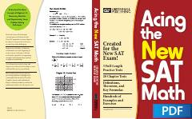

ATYangi SAT matematika imtihoniga tayyorgarlik ko'rish uchun qo'llanma.
Ushbu qo'llanma yangi SAT imtihonining matematika qismiga tayyorgarlik ko'rish uchun mo'ljallangan bo'lib, algebra, statistika va geometriya bo'yicha nazariyalar, formulalar hamda amaliy mashqlarni o'z ichiga oladi. Kitobda tushuntirishlar, misollar va to'liq yechimli amaliy testlar keltirilgan.